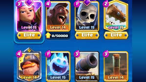

Sample Decks & Rotation Tips

Here are three sample decks/archetypes that are great for learning fundamental mechanics.
Each deck is accompanied by a short note on playstyle and rotation priorities.
- Golem Beatdown — heavy push deck; save elixir for big commits and protect the Golem.
- Hog Cycle — fast cycle pressure; keep chipping tower damage and punish opponents' misplays.
- Bridge Spam — aggressive, split-pressure deck; maintain constant lane pressure and bait small spells.
Practice these decks in friendly battles before ladder to gauge timing and card interactions.
Use the deck images you add to quickly recognize card roles during gameplay.
Rotation Notes
Recognize your win condition and protect it. Cycle decks aim to out-rotate heavy decks; heavy decks want to get one large push through.
Common Counters
Spell bait, small troops, and well-timed area damage are effective counters to many pushes.